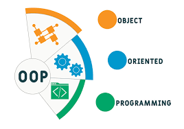

Conceitos fundamentais
Paradigma significa um modelo, um padrão, um exemplo ou uma estrutura teórica que serve de referência e estabelece os limites de como algo é compreendido ou feito.
Um paradigma de programação é um estilo ou abordagem para estruturar e organizar o código de um programa. Cada paradigma tem suas próprias regras e princípios que orientam a forma como os programadores pensam e escrevem o código.
A escolha do paradigma impacta a eficiência, legibilidade e manutenibilidade do código.
O paradigma de programação orientada a objetos (POO) é um estilo de programação que organiza o código em torno de "objetos", que são instâncias de "classes".
Uma CLASSE é como um molde ou uma planta que define as características e comportamentos de um tipo específico de objeto. Ela descreve os atributos (dados) e métodos (funções) que os objetos dessa classe terão.
Um OBJETO é uma instância concreta de uma classe. Ele possui seus próprios valores para os atributos definidos na classe e pode executar os métodos da classe.
ATRIBUTOS são as características ou propriedades de um objeto (ex: cor, tamanho, nome).
MÉTODOS são as ações ou comportamentos que um objeto pode realizar (ex: andar, calcular, exibir).
# Classe Cachorro - o molde class Cachorro: def __init__(self, nome_cachorro, raca_cachorro): self.nome = nome_cachorro self.raca = raca_cachorro def latir(self): return f"{self.nome} diz: Au au!" # Objetos - cachorros específicos criados a partir do molde rex = Cachorro("Rex", "Labrador") bob = Cachorro("Bob", "Poodle") print(rex.latir()) # Rex diz: Au au! print(bob.latir()) # Bob diz: Au au!
O paradigma de programação orientada a objetos promove a modularidade, reutilização de código e encapsulamento, tornando o desenvolvimento de software mais organizado e eficiente.
Na programação funcional, o foco está em funções puras que recebem entradas e produzem saídas sem alterar o estado do programa. O código é estruturado em torno de funções e a ênfase está na transformação de dados.
# Exemplo Funcional def calcular_area_retangulo(largura, altura): return largura * altura def calcular_perimetro_retangulo(largura, altura): return 2 * (largura + altura) # Dados separados das funções largura = 5 altura = 3 area = calcular_area_retangulo(largura, altura) perimetro = calcular_perimetro_retangulo(largura, altura)
Na programação orientada a objetos, o foco está em objetos que possuem atributos e métodos. O código é estruturado em torno de classes e objetos, permitindo uma modelagem mais próxima da realidade.

# Exemplo Orientado a Objetos class Retangulo: def __init__(self, largura, altura): self.largura = largura self.altura = altura def calcular_area(self): return self.largura * self.altura def calcular_perimetro(self): return 2 * (self.largura + self.altura) # Criando um objeto Retangulo retangulo = Retangulo(5, 3) area = retangulo.calcular_area() perimetro = retangulo.calcular_perimetro()
Uma classe é definida usando a palavra-chave class , seguida do nome da classe (sempre iniciando com letra maiúscula, por convenção).
# Definindo uma classe class Carro: pass # pass indica que a classe está vazia por enquanto # Criando instâncias (objetos) da classe Ferrari = Carro() Fiat_Uno = Carro() print(type(Ferrari)) print(Ferrari == Fiat_Uno) # False - são objetos diferentes
# Definindo uma classe class Pessoa: especie = "Homo sapiens" # Este atributo é compartilhado por # todas as instâncias da classe # Criando instâncias pessoa1 = Pessoa() pessoa2 = Pessoa() print(pessoa1.especie) # Homo sapiens print(pessoa2.especie) # Homo sapiens
# Definindo uma classe class Animal: def __init__(self, nome, especie): self.nome = nome self.especie = especie # Criando instâncias animal1 = Animal("Buddy", "Cachorro") animal2 = Animal("Whiskers", "Gato") print(animal1.nome) # Buddy print(animal1.especie) # Cachorro print(animal2.nome) # Whiskers print(animal2.especie) # Gato
Crie uma classe chamada Livro vazia (use "pass") e crie duas instâncias dessa classe chamadas livro1 e livro2.
Crie uma classe ContaBancaria com um atributo de classe chamado "banco" com o valor "Banco Python". Crie uma instância e imprima o nome do banco.
Crie três instâncias da classe Livro do exercício 1 e verifique se elas são objetos diferentes usando o operador "==".
# Exercício 1 class Livro: pass # Criando instâncias livro1 = Livro() livro2 = Livro() # Exercício 2 class ContaBancaria: banco = "Banco Python" # Criando instância conta = ContaBancaria() print(conta.banco) # Banco Python # Exercício 3 livro3 = Livro() # Verificando se são objetos diferentes print(livro1 == livro2) # False print(livro1 == livro3) # False
Atributos são variáveis que pertencem a um objeto. Existem dois tipos:
__init__
Métodos são funções que pertencem a um objeto. Existem dois tipos:
# Definindo uma classe Computador com atributos e métodos class Computador: # Atributo de classe tipo = "Desktop" # Atributo de instância def __init__(self, marca, processador, ram): self.marca = marca self.processador = processador self.ram = ram # Método de classe @classmethod def mostrar_tipo(cls): return cls.tipo # Método de instância def alterar_atributos(self, marca, processador, ram): # Atributos de instância self.marca = marca self.processador = processador self.ram = ram # Criando instâncias pc1 = Computador("Dell", "Intel i5", 8) pc2 = Computador("HP", "AMD Ryzen 5", 16) print(pc1.marca) # Dell print(pc2.processador) # AMD Ryzen 5 print(pc1.mostrar_tipo()) # Desktop print(pc2.mostrar_tipo()) # Desktop print(Computador.mostrar_tipo()) # Desktop pc1.alterar_atributos("Lenovo", "Intel i7", 16) print(pc1.marca) # Lenovo pc2.alterar_atributos("Asus", "AMD Ryzen 7", 32) print(pc2.processador) # AMD Ryzen 7
Crie uma classe Circulo com um atributo raio . Adicione métodos para calcular a área (π × raio²) e o perímetro (2 × π × raio). Considere 3.14 para π.
Crie uma classe ContadorDePalavras com um método contar que recebe uma frase e retorna o número de palavras nela.
Crie uma classe chamada Pessoa com os seguintes atributos de instância: nome, ano de nascimento e altura. Adicione um método chamado calcular_idade que retorna a idade da pessoa em anos.
# Exercício 4 class Circulo: def __init__(self, raio): self.raio = raio self.pi = 3.14 def calcular_area(self): return self.pi * self.raio ** 2 def calcular_perimetro(self): return 2 * self.pi * self.raio # Criando uma instância e executando os métodos circulo1 = Circulo(5) print(f"Área: {circulo1.calcular_area()}") print(f"Perímetro: {circulo1.calcular_perimetro()}") # Exercício 5 class ContadorDePalavras: def contar(self, frase): palavras = frase.split() return len(palavras) # Criando uma instância e executando o método contador = ContadorDePalavras() frase = "Esta é uma frase de exemplo." print(f"Número de palavras: {contador.contar(frase)}") # Exercício 6 class Pessoa: def __init__(self, nome, ano_nascimento, altura): self.nome = nome self.ano_nascimento = ano_nascimento self.altura = altura def calcular_idade(self): return 2026 - self.ano_nascimento # Criando uma instância e executando o método pessoa1 = Pessoa("Alice", 1993, 1.65) print(f"Idade de {pessoa1.nome}: {pessoa1.calcular_idade()} anos")
O método __init__ é um método especial em Python que é chamado automaticamente quando uma nova instância de uma classe é criada. Ele é usado para inicializar os atributos do objeto com valores específicos.
O método __init__ é definido dentro da classe e recebe o parâmetro self, que representa a instância atual do objeto. Além de self, você pode adicionar outros parâmetros para passar valores ao criar a instância.
self
Dentro do método __init__, você pode atribuir valores aos atributos do objeto usando a sintaxe self.atributo = valor . Isso permite que cada instância da classe tenha seus próprios valores para os atributos.
self.atributo = valor
O método __init__ é uma parte fundamental da programação orientada a objetos em Python, permitindo que você configure e personalize objetos de acordo com suas necessidades ao criá-los.
class Estudante: def __init__(self, nome, matricula, curso): self.nome = nome self.matricula = matricula self.curso = curso self.notas = [] # Inicializa com lista vazia def adicionar_nota(self, nota): self.notas.append(nota) def calcular_media(self): if len(self.notas) == 0: return 0 return sum(self.notas) / len(self.notas) def exibir_info(self): print(f"Estudante: {self.nome}") print(f"Matrícula: {self.matricula}") print(f"Curso: {self.curso}") print(f"Média: {self.calcular_media():.2f}") # Criando estudantes aluno1 = Estudante("Maria Silva", "2023001", "Engenharia") aluno1.adicionar_nota(8.5) aluno1.adicionar_nota(9.0) aluno1.adicionar_nota(7.5) aluno1.exibir_info()
Crie uma classe ContaBancaria com um construtor que recebe o nome do titular e o saldo inicial (padrão 0). Adicione métodos depositar e sacar .
# Criando a classe ContaBancaria class ContaBancaria: def __init__(self, titular, saldo_inicial=0): self.titular = titular self.saldo = saldo_inicial def depositar(self, valor): self.saldo += valor def sacar(self, valor): if valor <= self.saldo: self.saldo -= valor else: print("Saldo insuficiente.") # Criando uma instância da conta conta1 = ContaBancaria("João", 1000) conta1.depositar(500) conta1.sacar(200) print(f"Titular: {conta1.titular}, Saldo: {conta1.saldo}")
Crie uma classe Aluno que represente um aluno de uma escola.
# Criar aluno aluno1 = Aluno("Pedro Santos", "2024001", "3A") # Adicionar notas aluno1.adicionar_nota(8.5) aluno1.adicionar_nota(7.0) aluno1.adicionar_nota(9.0) aluno1.adicionar_nota(6.5) # Verificar situação print(aluno1.calcular_media()) # 7.75 print(aluno1.verificar_aprovacao()) # Aprovado # Mudar de turma aluno1.mudar_turma("3B") # Exibir boletim completo aluno1.exibir_boletim()
Adicione os métodos melhor_nota() e pior_nota() que retornam respectivamente a maior e menor nota do aluno.